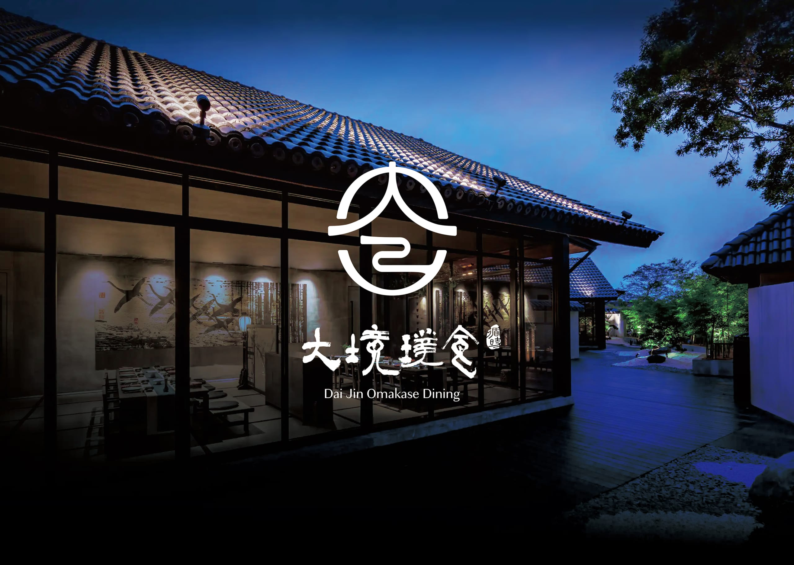
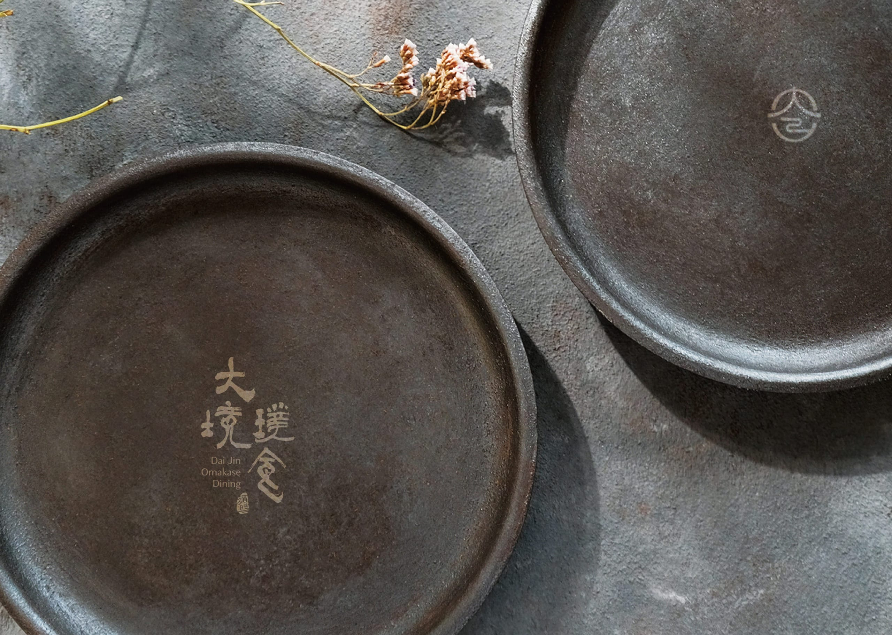
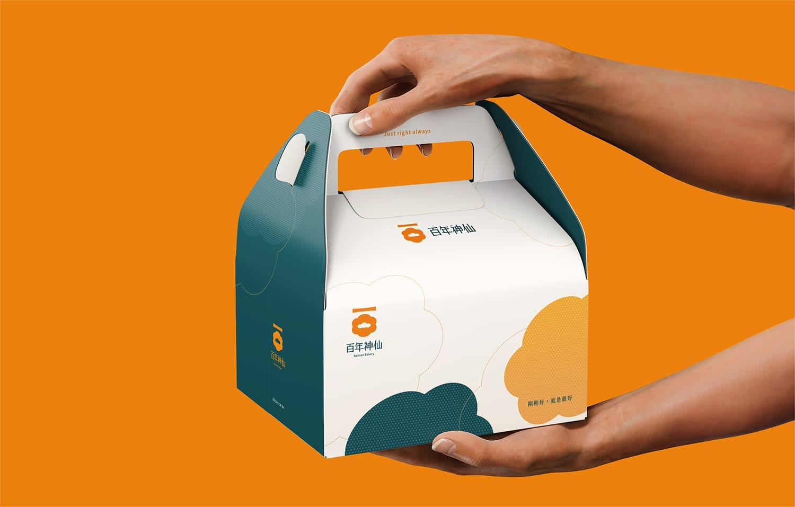
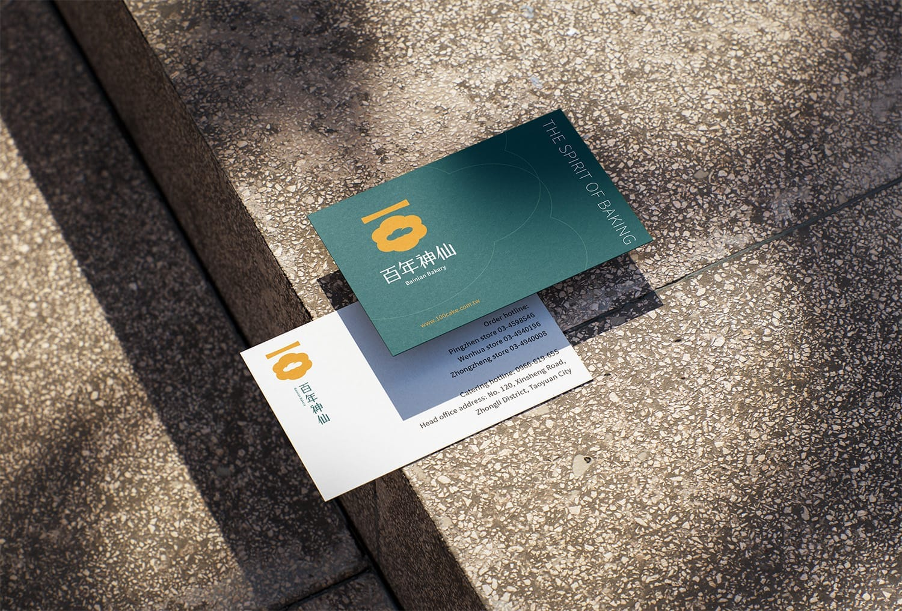
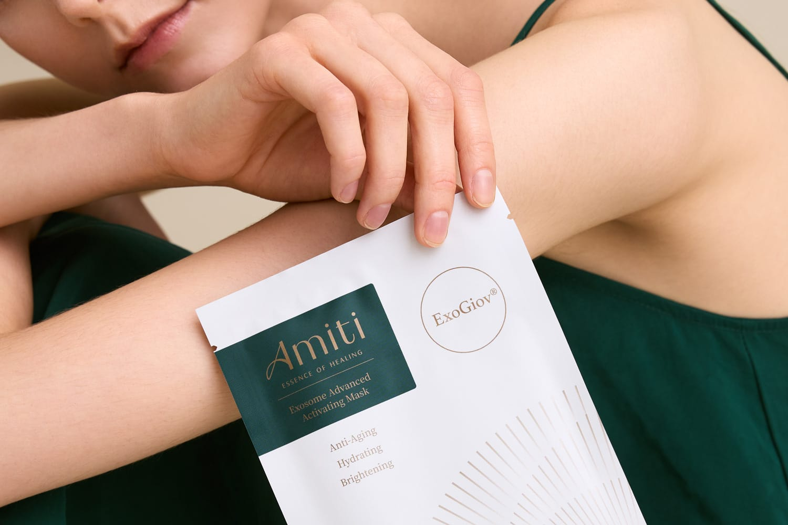

Brand Positioning
品牌定位
Understand your business, audience and market. Define what your brand stands for.
理解企業、市場與受眾，確立品牌的核心方向。
A good product deserves
a clear brand.
一個好的產品，需要一個清楚的品牌。
從定位、識別到應用，建立走向市場的品牌基礎。
One clear beginning.
7 週品牌啟動計畫
讓企業的價值，
被清楚地看見。
Before people experience your product, they meet your brand. Make that first impression a clear one.
品質、技術與服務，是企業累積的價值。品牌決定市場如何認識你，也為每一次接觸建立一致的期待。
從品牌的核心，建立完整的形象。
A clear direction. A distinct identity.
A system you can put to work.
品牌定位
Understand your business, audience and market. Define what your brand stands for.
理解企業、市場與受眾，確立品牌的核心方向。
品牌識別
A considered logo, typography and colour system. Distinctive, and consistent.
整合標誌、字體與色彩，形成清楚且一致的視覺形象。
品牌規範
Practical principles that keep your brand coherent across every touchpoint.
整理識別使用原則，維持不同應用場合的視覺一致性。
品牌應用
Three applications chosen around your needs. Your identity, out in the world.
依需求選擇三項應用，讓品牌從識別系統走向實際使用。
Every brand has its own way of being seen.
每一個品牌，都有自己的表達方式。
Design by Fengworks 汎羽 · 團隊過往作品

VIEW PROJECT ↗Eastern philosophy. A contemporary dining identity.
大境璞食・餐飲品牌形象


VIEW PROJECT ↗Everyday warmth, with a character of its own.
百年神仙・烘焙品牌識別

 VIEW PROJECT ↗
VIEW PROJECT ↗
A considered identity. A refined skincare experience.
Amiti・保養品品牌形象
Your next chapter starts with a clear brand.讓下一個計畫，從清楚的品牌開始。
Get the full program7 週，讓品牌準備好出發。
From our agreed project start date.
自雙方約定的正式開工日起算。
理解品牌
Brand conversations and market research. Understand where you are, and where you want to go.
透過品牌訪談與市場研究，理解企業現況與發展方向。
確立方向
Align on positioning and visual direction. Give every design decision a clear foundation.
整理品牌定位與視覺方向，建立後續設計的基礎。
發展識別
Shape the logo, typography, colour and visual system into one coherent identity.
設計品牌標誌、字體、色彩與基本視覺系統。
完成應用
Bring the system into everyday use, with applications, guidelines and final design files.
完成品牌應用與規範，整理設計成果，展開品牌溝通。
As your business evolves, your brand grows with it. Extend the same clear thinking to more touchpoints.
讓品牌持續發展，在更多產品、媒介與溝通場合，維持清楚且一致的形象。
Optional services are scoped and quoted separately. 延伸服務依需求另行規劃與報價。
We start with your business: its goals, its market, its people. Then we connect strategy, identity and application through a considered design process.
從企業目標、市場與受眾出發，在設計品質與實際需求之間做出適當判斷。NoBrand 將定位、識別與應用整合成一套清楚的品牌服務。
你的品牌計畫，從這裡開始。
NoBrand
Brand Launch Program
7 週品牌啟動計畫
TAX INCLUDED 含稅
Everything connects. From what your brand stands for to how it shows up in the world.
Full deliverables and terms are outlined in the service proposal.
詳細交付與合作條件以正式方案及合約為準；延伸服務另行報價。
關於合作，你可能想了解。
Businesses launching a new brand, refreshing an existing identity, or building a clear visual system with practical applications.
適合準備建立新品牌、重新整理品牌形象，或需要清楚識別系統與基礎應用的企業。
Brand positioning, visual identity, brand guidelines and three brand applications. The full proposal sets out the deliverable specifications.
包含品牌定位、視覺識別、品牌規範及三項基礎品牌應用；詳細交付規格請參考完整方案。
Yes. Packaging, websites, social media design and other materials can be scoped and quoted around your needs.
可以。包裝、網站、社群視覺與品牌文宣等延伸服務，可依需求另行規劃與報價。
The program includes agreed review and revision stages. The scope and number of revisions are specified in the proposal and contract.
服務包含約定的提案確認與修改機制；詳細次數及範圍會在正式方案與合約中說明。
After the contract is signed and the initial payment is received, we agree on a project start date. Timelines and any adjustments follow the proposal and contract.
完成簽約及前金付款後，雙方確認正式開工日期。詳細時程、回覆與展延條件以正式方案及合約為準。
Request the full program to review the scope and approach. Then arrange an initial conversation with the team to discuss your needs.
先索取完整方案，了解服務內容與合作方式，再預約初步諮詢，與團隊確認需求。
Get the full program ↗準備開始你的品牌計畫？
Start with the details.
Explore the scope, process and fee.
索取完整品牌啟動方案，了解服務內容、合作流程與費用。